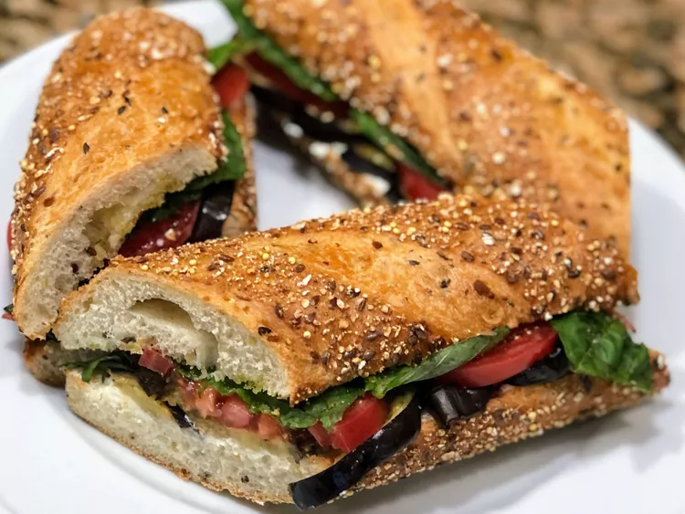

Italian BLT

Description
Roasted eggplant on a whole grain roll with fresh tomatoes, basil, and Boursin® cheese.Do you believe eggplant can taste this good?
Ingredients
- 1 tablespoon olive oil, or as needed
- 1 small eggplant, halved lengthwise and sliced
- 2 (6 inch) whole-grain sandwich rolls, split
- 1 teaspoon garlic granules
- ¼ cup Greek yogurt
- 1/3 cup fresh basil leaves
- 2 tomatoes, sliced
- 1 tablespoon garlic-and-herb spreadable cheese (such as Boursin®)
- 2 cloves garlic, minced
- 1 Roma (plum) tomato, sliced
- ¼ cup chopped fresh basil leaves
Steps
- Set oven rack about 6 inches from the heat source and preheat the oven's broiler.
- Brush olive oil over both sides of each eggplant slice. Arrange eggplant slices onto a baking sheet.
- Cook eggplant slices under the broiler until tender and lightly browned, about 5 minutes per side.
- Toast split rolls under the broiler, cut sides up, until lightly browned, 2 to 3 minutes.
- Stir yogurt, cheese, and garlic together in a small bowl until smooth; spread onto the rolls. Divide eggplant slices between the rolls; add tomato slices and basil to complete sandwiches.